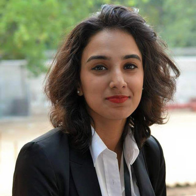

CTC
Counter Terrorism Committee
The CTC works to bolster the ability of United Nations Member States to prevent terrorist acts both within their borders and across regions. Member States implement a number of measures intended to enhance their legal and institutional ability to counter terrorist activities, including taking steps to:
- Criminalize the financing of terrorism
- Freeze without delay any funds related to persons involved in acts of terrorism
- Deny all forms of financial support for terrorist groups
- Suppress the provision of safe haven, sustenance or support for terrorists
- Share information with other governments on any groups practicing or planning terrorist acts
- Cooperate with other governments in the investigation, detection, arrest, extradition and prosecution of those involved in such acts; and
- Criminalize active and passive assistance for terrorism in domestic law and bring violators to justice.
CTC will be a goal-oriented committee with a view of coming up with practical and efficient solutions. The committee shall also incorporate a crisis session in which a crisis will be presented to the delegates to solve within a limited debating session.
Topic Area: Boko Haram Insurgency in Nigeria
(Research Guide)
